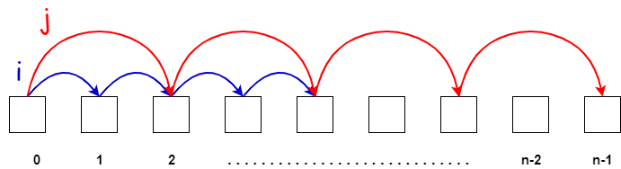

Working With Pointers
Before we move on to the next challenge, let's talk more about pointers and how they work. In general, pointers are variables that store the memory address of another variable. This concept is more abstract in TypeScript and not as prevalent as in languages like C and C++, where special types and characters are used to declare and work with pointers, such as the * character for declaring a pointer variable and the & character to get the address of a variable.
In TypeScript, pointers are not explicitly used, but the underlying mechanism is still present when dealing with objects and arrays. It is different with primitive values, so we will look at examples of both.
Let's start with primitives, which are strings, numbers, booleans, null, undefined and symbols.
Let's examine a simple example:
let a = 1;
let b = a;
console.log(b); // 1
In this example, we have two variables, a is set to 1 and b is set to a. If we log b it is 1. If we change the value of a, b is not affected. This is because primitive values in TypeScript are assigned by value, not by reference. When you assign a to b, the actual value of a (which is 1) is copied into b. As a result, b becomes an independent copy of the value stored in a, and any subsequent changes made to a will not impact the value stored in b. This behavior is consistent with primitive data types like numbers, strings, and booleans, where each variable holds its own distinct value in memory.
let a = 1;
let b = a;
a = 2;
console.log(b); // 1
Objects and arrays, on the other hand, behave differently. When you assign an object or an array to another variable, you are actually copying the reference to the object or array, not the actual value. This means that both variables will point to the same memory location where the object or array is stored. Consequently, if you modify the contents of the object or array using one variable, the changes will be reflected when accessing the object or array through the other variable.
Let's look at an example:
const c = { name: "John" };
const d = c;
console.log(d.name); // John
d now points to the same area in memory as c. If we log d.name, we get John.
If we change the value of c.name to Brad and then log d.name, you will see that d.name is now Brad as well. This is because we copied the reference, not the actual value.
const c = { name: "John" };
const d = c;
c.name = "Brad";
console.log(d.name); // Brad
Fast and Slow Pointer Pattern
There are different patterns when it comes to pointers. One of the most common patterns is the fast and slow pointer pattern. This pattern is used to solve problems where you need to find a certain node or element in a linked list or array. Remember, nodes are objects, so they are passed by reference.
The idea of this pattern is that the pointers start at the same point, but one pointer moves faster than the other. The faster pointer moves at twice the speed of the slower pointer. When the faster pointer reaches the end of the list, the slower pointer will be at the middle node.

let's look at a quick example:
function findMiddle(head: LinkedList): Node | undefined {
let slow = head; // slow pointer
let fast = head; // fast pointer
while (fast !== undefined && fast.next !== undefined) {
fast = fast.next.next; // moves two nodes at a time
slow = slow.next; // moves one node at a time
}
return slow; // returns the middle node
}
This findMiddle function takes in the head of a linked list and returns the middle node. The function uses two pointers, slow and fast, to traverse the linked list. The slow pointer moves one node at a time because of the slow.next assignment, while the fast pointer moves two nodes at a time because of the fast.next.next assignment.
When the fast pointer reaches the end of the list, the slow pointer will be at the middle node.
In the next lesson, we are going to implement a find middle function using the LinkedList class that we created.